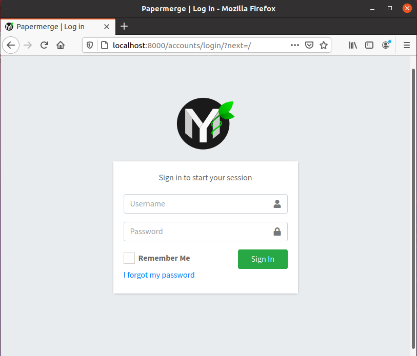
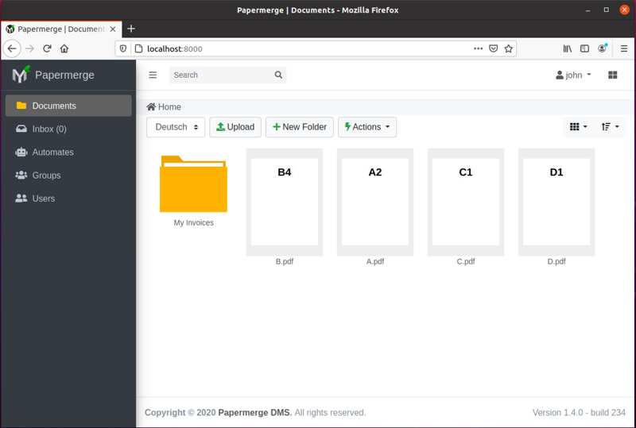

Installation
If you follow this document and still have troubles, please open an issue on GitHub so I can fill in the gaps.
This guide is split into two parts: short one and very detailed one. Short version is meant for people who are comfortable with development tools like Python, Django, pip, git or even gcc. In this case I will skip most of details as they will sound boring for such persons.
Detailed is for people who probably heard of Python - as programming language - but do not have any experience working with it. Any form of prior programming (in ruby, perl, java, C/C++) experience will help you to grasp the concepts quicker.
In both versions of this guide you need to know what is a command line terminal and how to work with it. In general Papermerge is a Linux/Unix based software. In this guide I will use Ubuntu 20.04 as example, but this instructions can be adopted easily for any Linux distribution.
Short Version
First download the source code. In this guide we clone latest stable version 1.5.5 into folder PapermergeDMS (located in home folder):
git clone --branch v1.5.5 https://github.com/ciur/papermerge.git PapermergeDMS
- Install required Ubuntu 20.04 LTS deb packages:
sudo apt install build-essential \
python3-pip \
python3-venv \
git \
imagemagick \
poppler-utils \
pdftk \
tesseract-ocr \
tesseract-ocr-eng \
tesseract-ocr-deu \
tesseract-ocr-fra \
tesseract-ocr-spa
- Create python virutal environment and activate it:
cd ~/PapermergeDMS
python3 -m venv .venv --system-site-packages
source .venv/bin/activate
Alternatively you can create python virtual environment with command:
virtualenv .venv -p python3.7
Advantage of last command is that you can specify exact python version. Papermerge requires python version >= 3.7
- Install necessary dependencies:
pip3 install -r requirements/base.txt
- Initialize SQLite database with:
./manage.py migrate
- Create a user for Papermerge instance:
./manage.py createsuperuser
- Start webserver with:
./manage.py runserver <IP>:<PORT>
If no specific IP or PORT is given, the default is 127.0.0.1:8000 also known as http://localhost:8000/.
- In a separate window, change to the project's root directory again, but this time, you should start the worker script with:
./manage.py worker
Detailed Version
Step 1 - Python and Friends
Papermerge is written in Python. First thing you need to make sure python interpreter is installed.
Ubuntu 20.04 comes with python interpreter already installed.
However, the command to invoke python interpreter is python3:
$ python3 --version
Python 3.8.2
Note
Python community now transitions from python2 (which is not maintained
anymore) to python3. This is why in many Linux distributions you can
access python interpreter either with python command or with
python3 command.
Warning
Make sure your python is at least version 3.7
A close python's friend is pip command. pip is python's package manager.
Similar as with python interpreter story - there might be either pip or pip3 - latter is specifically for
python version 3. We will use pip3:
sudo apt install python3-pip
Make sure it was installed:
pip3 --version
pip 20.0.2 from /usr/lib/python3/dist-packages/pip (python 3.8)
Another package which you need to install is python3-venv. This one will be
used in Step 2 we'll learn and setup python virtual environment:
sudo apt install python3-venv
Although Papermerge is written in python, it uses some special python modules which are compiled from C sources and used in binary form. This means that you need gcc compiler installed as well.
In Ubuntu 20.04, gcc is available via built-essential package:
sudo apt install build-essential
Double check that gcc was installed:
$ gcc --version
gcc (Ubuntu 9.3.0-10ubuntu2) 9.3.0
Copyright (C) 2019 Free Software Foundation, Inc.
This is free software; see the source for copying conditions. There is NO
warranty; not even for MERCHANTABILITY or FITNESS FOR A PARTICULAR PURPOSE.
Ok, great! We have to install one more utility - git. Strictly speaking,
you don't need git, because you can download the tarball and unzip
(or untar or extract) sources. But let's stick with git:
sudo apt install git
Double check that git was installed:
$ git --version
git version 2.25.1
And now clone the latest stable version of Papermerge directly from GitHub repository:
git clone --branch v1.5.5 https://github.com/ciur/papermerge.git PapermergeDMS
Note
As of writing this - latest stable version of Papermerge is 1.5.5, thus the
argument --branch with respective version. Also, notice that repository was
cloned inside folder named PapermergeDMS, you can choose whatever title for
that folder suites you.
From now on, I will refer to PapermergeDMS folder as project root or top level folder of the project
Step 2 - Python Virtual Environment
Change directory to project's root (folder where you cloned/extracted sources):
cd PapermergeDMS
Our goal in this step is to install python dependencies - like Django for example. Most important dependencies - without which project won't start - are listed in requirements/base.txt
(relative to project's root).
The command to do that is as simple as pip install -r
requirements/base.txt - but please don't rush to type it yet. We need to
clarify the concept of python virtual environment first.
If you simply type pip insall -r requirements/base.txt - it will install
packages system-wide. A better approach is to install dependencies per
project. So, the place designated for python packages specific for this
project is called a virtual environment. Let's create a python virtual
environment and name it .venv:
python3 -m venv .venv --system-site-packages
Note
For virtual environment you can choose whatever name you want. For example
you can choose to name your virtual environment py37, in that case command
will be python3 -m venv py37. However, I chose .venv because in
Unix/Linux dotted folders have special meaning - they are hidden so to
speak.
Note
--system-site-packages is necessary, it will install a package called wheel.
Without wheel package, pip install later will issue warning.
Alternatively you can create python virtual environment with following command:
virtualenv .venv -p python3.7
Advantage of last command is that it specifies exact python version.
Note
Papermerge requires python version >= 3.7
Next we need to activate virtual environment:
source .venv/bin/activate
Terminal's prompt (bash - in Ubuntu) will change to indicate that python virtual environment is active.
Note
Python virtual environment is just a directory where python packages will
be installed. Activating python environment is basically changing your
current PATH variable - this is exactly what source
.venv/bin/activate command does. If you will run echo $PATH you will
notice that PapermergeDMS/.venv/bin is first in path, this means that
python interpreter first of all will look up for its dependencies there.
And now, with python virtual environment active, let's install Papermerge dependencies:
source .venv/bin/activate
pip3 install -r requirements/base.txt
At this point, all python packages were installed inside directory
.venv/lib/python3.8/site-packages and that directory is first one in your
path.
Step 3 - Manage Command
Papermerge is based on Django Web Framework.
Django provides a manage.py script which is used to run all project related commands.
manage.py script is located in project's root directory.
First let's run migrations:
./manage.py migrate
Note
At this point you will see warnings about missing binary dependencies. We
deal with them little bit later when we will discuss ./manage.py check
command.
run migrations - in django's jargon means that you prepare the database. By
default Papermerge (as any Django based project) uses sqlite
database - which is stored in a single file.
./manage.py migrate command will create that file (it is called db.sqlite3
and is in project's root directory) and create database schema for the
project.
We are not ready yet, but at this point, you can built-in web server and access login screen:
./manage.py runserver
runserver command will start web server on port 8000. You
can access login screen via any web browser by pointing it to
http://localhost:8000/

But as I mentioned, we are not ready yet. First of all, when you run
./manage.py runserver command you probably noticed couple of warnings. To see
if all binary dependencies were installed run following command:
./manage.py check
On freshly installed Ubuntu 20.04 LTS you will see following warnings:
System check identified some issues:
WARNINGS:
?: Papermerge can't find convert. Without it, image resizing is not possible.
HINT: Either it's not in your PATH or it's not installed.
?: Papermerge can't find identify. Without it, it is not possible to count pages in TIFF.
HINT: Either it's not in your PATH or it's not installed.
?: Papermerge can't find tesseract. Without it, OCR of the documents is impossible.
HINT: Either it's not in your PATH or it's not installed.
?: papermerge.conf.py file was found. Following locations attempted /etc/papermerge.conf.py, papermerge.conf.py
HINT: Create one of those files or point PAPERMERGE_CONFIG environment name to it.
System check identified 5 issues (0 silenced).
This means that you need to install all above dependencies. Let's install all of them in one shot:
sudo apt install imagemagick \
poppler-utils \
tesseract-ocr \
tesseract-ocr-eng \
tesseract-ocr-deu \
tesseract-ocr-fra \
tesseract-ocr-spa
When installation is complete, run check again:
./manage.py check
System check identified some issues:
WARNINGS:
?: papermerge.conf.py file was found. Following locations attempted /etc/papermerge.conf.py, papermerge.conf.py
HINT: Create one of those files or point PAPERMERGE_CONFIG environment name to it.
System check identified 1 issue (0 silenced).
To silence last warning, just create an empty papermerge.conf.py file in project's root,
we will turn our attention to that file little bit later:
touch papermerge.conf.py
Step 4 - Superuser
It's time to create administrative (superuser) user for your Papermerge instance:
./manage.py createsuperuser
The username and password you will type above you will use as login credentials. So, start server again (in case it is not running):
./manage.py runserver
Point your web browser to http://localhost:8000 and use superuser's
username/password to login.
Step 5 - Worker
In a separate window, change to the project's root directory again, but this
time, you should start the worker with ./manage.py worker.
Remember to activate python virtual environment first:
$ cd ~/PapermergeDMS
$ source .venv/bin/activate
$ ./manage.py worker
Worker is the part which performs ocr process. For correct function of Papermerge you must have both parts running:
- main app - the one which you start with
./manage.py runserver - worker - the one which you start with
./manage.py worker
Now, you can start uploading documents. Remember that only PDF, TIFF, jpeg and
png :ref:file_formats are supported.

Step 6 - Configurations
By default, you don't need configuration papermerge.conf.py file.
However, if there is no configuration file - Papermerge will issue a warning.
In one of previous steps we created an empty configuration file:
$ cd ~/PapermergeDMS
$ touch papermerge.conf.py # it is empty now
Note
What is the purpose of empty configuration file? It has one - it raises awareness of administrator that such file exists. The logic is following - if administrator created papermerge.conf.py => Papermerge application immediately concludes admin is aware of such file and silence the warning message. Again - it is absolutely OK to leave papermerge.conf.py file empty.
By default, in language dropdown menu, two languages will be displayed German and English. You can change that with following configuration:
OCR_LANGUAGES = {
'eng': 'English',
'deu': 'Deutsch',
'spa': 'Español',
'fra': 'Français'
}
Now four languages will be displayed in language dropdown.
Note
In previous steps we installed english, spanish, french and german tesseract language packs (packages named tesseract-ocr-eng, tesseract-ocr-deu, tesseract-ocr-fra, tesseract-ocr-spa). For each language you want to ocr you need to have tesseract language pack installed.
Learn more Papermerge configurations in settings
What's Next?
Once you’ve tested things and are happy with the work flow, you should secure the installation and automate the process of starting the webserver and worker. server configurations explains different configuration scenarios of how you can make your bare metal setup - more stable.